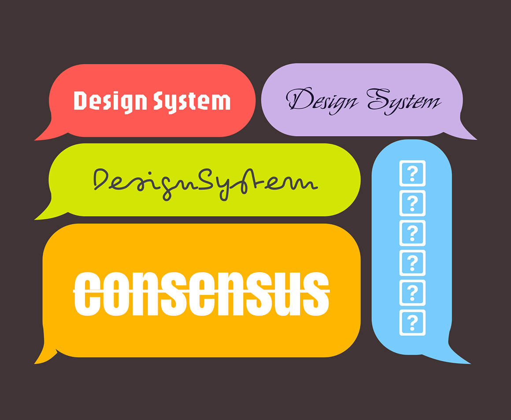
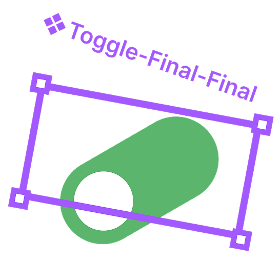
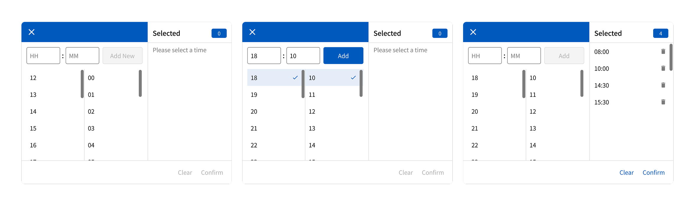
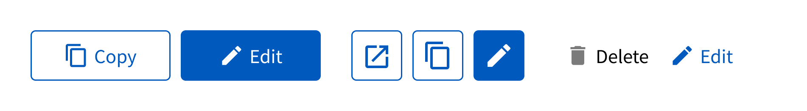
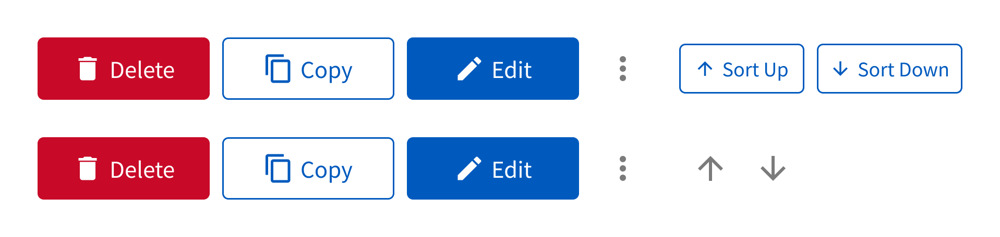
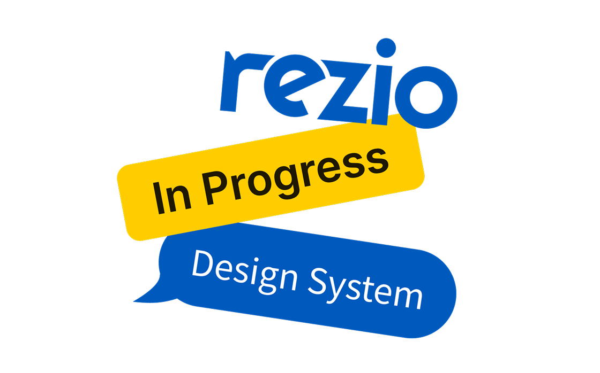

Quick Product Intro:
The Design System Rebuild aimed to unify KKday Rezio's fragmented UI components and optimize collaboration between design and engineering. Our goal was to reduce visual inconsistencies, accelerate development, and build a scalable foundation for future product expansion.
My Role:
As part of the design team, I co-led the rebuild. We trimmed the system down by 33% (from 60 to 40 variants) while adding key pieces like a multi-date picker and form filters. Beyond components, I pushed for UX guidelines, built a Figma library, and worked closely with engineers to set up workflows for version control, merging, and testing. By integrating reusable parts early and using AI-powered prototyping, we sped up iteration, cut rework, and made the system easier to maintain.
TimeFrame:
2024–2025
33% Fewer Variants
Streamlined the design system by reducing component variants by ~33% (from 60 to 40).
90% System Completion
Achieved over 90% completion of the system within one year, with ongoing improvements underway.
Aligned Workflows
Set up cross-functional collaboration workflows with engineering for consistent version control, merging, and testing.

Project Background:
This design system rebuild didn't start from scratch. One of the previous designers had attempted to establish one, but due to a lack of ongoing communication with engineers, it was never fully adopted. In addition, over time, the old system became increasingly outdated and revealed multiple issues, such as insufficient color contrast that failed accessibility checks, an excess of similar colors causing visual inconsistency, and numerous button styles lacking standardization.
Our Goal:
Rebuild a scalable system that fixes inconsistencies, makes components easier to use, and fosters stronger designer–engineer collaboration.
When Past Designs Turn Into a Tangle, What's Next?
We retired outdated files, kept valuable insights, and rebuilt components. Like fixing a ship mid-voyage, changes had to be gradual, not overnight.
A real design system isn't just files in Figma, it's shared understanding between design and engineering. Our old system lacked alignment, slowing updates and hurting consistency. The new system focuses on fit for the team, usability, and sustainable collaboration.
Through multiple iterations and real project trials, we refined a collaboration process with engineering that ensured new components were not only well-designed but also technically feasible, scalable, and easy to maintain:
Step 1, Observation & Requirements Gathering
For example, in the original design, selected time tags would push the input field downward, so we needed a multi-select picker that allowed users to display multiple times directly within the picker. In addition, the single-select picker had efficiency issues, it required users to click repeatedly to complete the selection, resulting in unnecessary actions.
Step 2, Discussion & Direction Alignment
For example, when we identified the need for a multiple time picker, we worked with the engineering team not only to communicate the strength of the demand and its scope of use, but also to ensure it could, while reusing parts of the single-select picker design, display multiple selected times directly within the picker without breaking the layout.
Step 3, Prototype & Usability Testing
For example, when designing the multiple time picker, we built an interactive prototype and used Lovable for AI-powered prototype testing. This allowed us to quickly simulate user flows, gather instant feedback, and refine the design before moving to final implementation.
Step 4, Final Design & Development
For example, during the multiple time picker implementation, we used Storybook to review and validate the component. This allowed us to check functionality, interactions, and visual consistency in an isolated environment before integration, ensuring the final build matched the design specifications.

Here's the final version we arrived at through prototyping exploration:
Visual Style
Visual Style is the foundation of a product's look and feel, defining the overall aesthetic. It includes colors, typography, spacing, icons, etc. Below is our token naming hierarchy, using color as an example:
Components
Components are the reusable building blocks that bring consistency to the interface. They include buttons, input fields, menus, cards, etc. Our components are organized into categories such as General (buttons, typography, etc.), Layout, Data Entry, Data Display, and Feedback.
From an initially unstructured and chaotic state, we reorganized them with clear classifications and rebuilt the library from scratch. It took a year to reach over 90% completion, and the system continues to evolve.
Patterns
Patterns are repeatable solutions to common interaction scenarios, defining not just the flow but also how the interface responds to different states. They guide users through tasks and ensure a cohesive experience across the product.
In our system, components are designed to handle six key states, Read Only, Disabled, Error, Hover/Pressing, Default (Empty), and Filled, ensuring clarity and consistency in every interaction, giving the team a shared playbook for solving recurring design challenges.
| Priority | Status | Usage |
|---|---|---|
| 1 | Read Only | The field is in a read-only state, and the entered values or functionalities cannot be changed. This applies to viewing the results of filled status fields. If the field is Default and has no value, it will display as Disabled in Read Only state. |
| 2 | Disabled | The field is in a non-editable state, applicable when the field has no practical function. |
| 3 | Error | Field error state, applicable when there is an error in the field. |
| 4 | Hover / Pressing | Field hover/pressing state, applicable when the field is highlighted during interaction. |
| 5 | Default / Filled | Field default and filled states, applicable to general status fields. If the field is filled and has a value, it will display as Read Only in Read Only state. If the field is Default and has no value, it will display as Disabled in Read Only state. |
Guidelines
Guidelines are the rules and best practices that guide design and development decisions. They cover areas such as component usage contexts, accessibility standards, and naming conventions. Below are the guidelines for using different buttons side by side, ensuring visual harmony and clear hierarchy in mixed-button layouts:


We also include decision rules for selecting the appropriate selection component, whether it is a checkbox, radio button, or dropdown, based on the number of options and the expected user flow. For example, a dropdown should only be used when there are more than seven options; otherwise, a radio selection is recommended for single-choice scenarios.

Within a year, we streamlined the design system by cutting component variants 33% (60 → 40) and adding key features like a multi-date picker and form filters. We set UX guidelines, built a Figma library, and aligned workflows with engineering to keep versioning and testing consistent.
By introducing reusable components early, refining patterns, and leveraging AI-powered prototyping, we boosted efficiency, reduced rework, and reached 90%+ completion.
Most importantly, we established a strong rhythm between designers, engineers, and PMs, turning the design system into a shared language and decision-making framework.